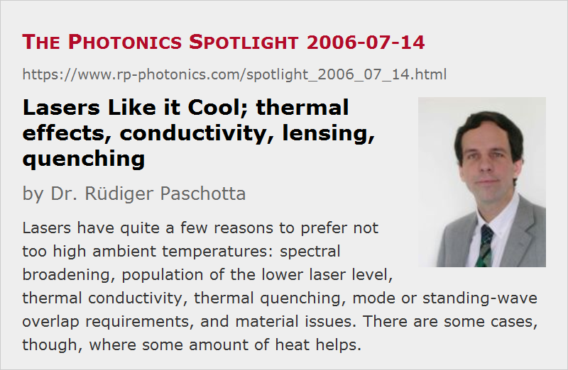

Lasers Like it Cool
Posted on 2006-07-14 as a part of the Photonics Spotlight (available as e-mail newsletter!)
Permanent link: https://www.rp-photonics.com/spotlight_2006_07_14.html
Author: Dr. Rüdiger Paschotta, RP Photonics Consulting GmbH
Abstract: Lasers have quite a few reasons to prefer not too high ambient temperatures: spectral broadening, population of the lower laser level, thermal conductivity, thermal quenching, mode or standing-wave overlap requirements, and material issues. There are some cases, though, where some amount of heat helps.

Sitting in my hot office, I am sure that lasers prefer lower ambient temperatures. They actually have plenty of reasons to do so:
- In solid-state gain media, high temperatures (high T) lead to a stronger excitation of higher-lying sublevels within Stark level manifolds. In this way, they often “smear out” the gain spectrum, and they may also increase the lower-level population (in quasi-three-level gain media), thus reducing the peak gain and the gain efficiency. Similar effects occur in most semiconductor lasers, where the Fermi distribution is smeared out.
- The thermal conductivity of solid-state media often gets lower at higher T, thus further increasing the peak temperatures as well as the temperature gradients, with all the consequences such as stronger thermal lensing, stronger mechanical stress, etc.
- If there is an intermediate energy level not too far below the upper laser level, high T can favor multi-phonon transitions, thus eventually quenching the upper-state lifetime.
- Particularly in VCSELs, high T can cause a mismatch between the intrinsic gain maximum and the spectral position of the closest cavity resonance. This can strongly increase the threshold pump power. Even for VECSELs, usually having closely spaced cavity resonances, a problem can arise from a mismatch between the standing-wave pattern (for the wavelength of maximum intrinsic gain) and the position of the quantum wells.
- Some construction materials of the laser head may be damaged at high temperatures.
But as it is with human beings, a few lasers like it hot. For example, they may require certain thermally activated effects for efficient operation. Also, VCSELs and VECSELs may be designed to have an optimum overlap of the standing-wave pattern with their quantum wells at a higher temperature. Strong cooling (cryogenic operation) can also reduce the gain bandwidth, which may be detrimental in some cases. So most like it cool, but a few don't.
This article is a posting of the Photonics Spotlight, authored by Dr. Rüdiger Paschotta. You may link to this page and cite it, because its location is permanent. See also the RP Photonics Encyclopedia.
Note that you can also receive the articles in the form of a newsletter or with an RSS feed.
Questions and Comments from Users
Here you can submit questions and comments. As far as they get accepted by the author, they will appear above this paragraph together with the author’s answer. The author will decide on acceptance based on certain criteria. Essentially, the issue must be of sufficiently broad interest.
Please do not enter personal data here; we would otherwise delete it soon. (See also our privacy declaration.) If you wish to receive personal feedback or consultancy from the author, please contact him e.g. via e-mail.
By submitting the information, you give your consent to the potential publication of your inputs on our website according to our rules. (If you later retract your consent, we will delete those inputs.) As your inputs are first reviewed by the author, they may be published with some delay.
|  |
If you like this page, please share the link with your friends and colleagues, e.g. via social media:
These sharing buttons are implemented in a privacy-friendly way!